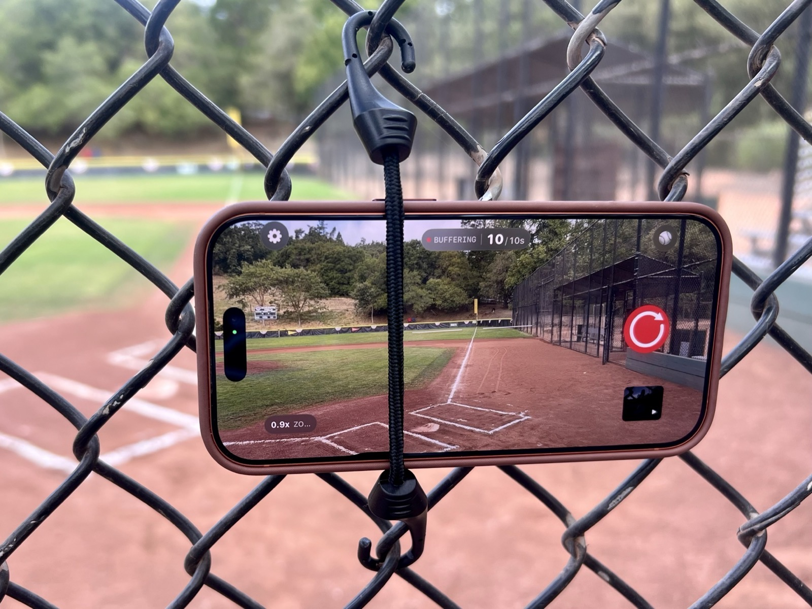

This is not intended as advice for recording an entire game for the team, or for making video that a coach can use later. I am talking about the parent version of this: you want a few good clips of your player batting, pitching, fielding, or making a play. And I am talking about using a phone rather than a full digital camera, mostly because it is easy and because it is what most parents already have with them.
The five most important tips
- Use the best video quality settings your phone offers before the game starts.
- Choose a position that gives you a clear angle on your player and the most likely action.
- Set your framing before the play starts so you do not have to chase the ball with the camera.
- Stabilize your phone whenever you can, especially if you are using zoom.
- Bring enough battery to get through the whole game or tournament day.
Use the best video settings your phone gives you
When you are using a phone to take videos of a sporting event, you probably want to use the highest quality settings available. On a modern phone, that usually means 4K resolution and 60 frames per second. You can typically find those options in the settings for your camera app.
The exact menu depends on your phone, but it is worth checking before the game starts. Once the game is moving, you probably will not want to be digging through settings while your player is walking up to bat.
Pick your position carefully
The second most important thing for how good your final videos look is where you position yourself. Obviously, you cannot stand on the playing field, so you usually have a few choices.
The best choice is to be right behind the batter. On many fields, there is a fence or cage behind home plate that you can see through, or that you can shoot through by positioning the phone lens between the fencing. You are safe there, you are protected, and it is a great angle for seeing the action. From behind the batter, you can often get the entire field into a wide shot if you want.
This is especially good if you are trying to capture the batter, the pitcher, or both. The downside is that you may face some competition from other parents. On some fields, the backstop is also made from wood or another solid material, so you cannot see through it or shoot through it. In that case, this angle may not be an option.
The second best option is to the left or right of the batter, but still behind them. If there is fencing there and you can stand in that area, it can still be a good angle. The challenge is that you may need to go fairly wide to capture the whole field, and depending on the field, you may not be able to capture the whole field from that spot.
If you are standing on the left side of the batter from your perspective, you should at least be able to see action at first base and in right field. If you are standing to the right side of the batter, you should be able to see action at third base and in left field. From both angles, you can probably get the pitcher and second base in view.
Another option is standing somewhere along the left or right sideline. Here, I think you have to think more about your subject and how much you want to zoom in to capture them. You are less likely to get a front-on view of a player and their face, which makes it a little less ideal for some videos.
That said, the sideline can be the best angle for certain plays. If your player is playing third base and you want to capture them fielding a ground ball and making a throw to first, you can potentially get both the player and the throw into the frame with a decent amount of zoom. The same idea can work if your player is playing first base and might be throwing across the field, though that will happen less often.
You can also stand behind the outfield fence. You will need a good amount of zoom for your player to stand out and fill the frame. Some modern phones have an 8x zoom or more, but it is worth remembering that the quality at that zoom is usually not as good as the standard 1x camera. The 1x camera is typically the best quality lens on the phone.
Still, the outfield can be a good position if your player is pitching and you want to get the pitcher and batter in frame from a different perspective. It can also be a fun angle if your player is batting and hits a deep ball into the outfield or over the fence, even though that is not going to happen very often.
Think about framing before the play starts
Another factor that determines the quality of your video is framing: how big you make the frame, and how much you zoom in or out.
If you are recording a player who is batting, you probably want to start pretty wide so you can see whichever part of the field they hit the ball to. If you go very wide, like a 0.5x shot, you can sometimes get the entire field of play from behind the batter. For most people, that is a great place to start.
If you frame the batter tightly so they mostly fill the frame, you are probably not going to get much of the field in view. If they hit the ball, either you will not see where it goes, or you will have to pan by rotating yourself and the camera toward the ball. The tighter the zoom, the harder that is to do. It is very hard to track a ball at high zoom levels.
Even at 1x or 0.5x, panning can make the camera shaky. The video may become less steady and less comfortable to watch. It is something you can try, but it is usually better to think about what you want in the frame before the play starts rather than trying to chase everything after it happens.
Frame fielding plays differently
If you are recording a player who is fielding, whether in the infield or the outfield, this is where you may want to zoom in more on that player. If you are waiting for a particular play to happen, like a grounder or a line drive to them, you may be waiting a while. But when it does happen, a tighter frame can make the video much more personal.
If you want to see the play develop after they field the ball, go wider. For example, if you want to see them throw to a base, you may want to set up your framing so that base is already in the shot. Again, that is usually better than trying to pan after the play starts. But if what you really want is a video of just your player fielding the ball, a relatively tight zoom can work well.
For pitching, try to include both pitcher and batter
For pitching, zoom can be great if you want your pitcher to fill the frame. Another strong angle is getting both the pitcher and the batter in frame at the same time. That is easiest if you are directly behind the batter, or directly behind the pitcher over the outfield fence with a higher zoom.
That pitcher-and-batter framing gives the pitch more context. You can see the delivery, the swing or take, and the result in one shot.
Stabilize the phone whenever you can
For any higher level of zoom, you will really benefit from stabilizing your camera. The simplest version is just tucking in your elbows and making yourself into a human tripod. You can also rest your phone against something like a wall, a bench, or the fence, even if you are still holding it.
A better option is a piece of equipment that stabilizes the phone for you. The default option is a tripod, and you can buy relatively inexpensive tripods that include a phone mount.
You can go even cheaper with a short two- or three-inch bungee cord with hooks on the ends. That can be great for strapping your phone directly to a fence. Once the phone is mounted and you are not holding it with your hand, it is suddenly much steadier. You are mostly just tapping record.

A more expensive option is a gimbal. A gimbal is a handheld device with motors that help keep the camera level and steady while you are holding it. Many gimbals also have a record button on the handle, which means you do not have to touch the phone itself to start recording.
If your phone is on a tripod or mounted to a fence, you can still press the record button directly on the screen. But another good option is a cheap Bluetooth remote. These often cost around $10 and can trigger capture in your camera app. That helps because you are not touching the phone and making it jiggle right as the recording starts.
Bring enough battery for the game
The last piece of equipment to think about is the phone itself, especially the battery. Keeping the camera app open and shooting video for long stretches can drain the battery relatively quickly.
A typical fully charged phone should last for an entire game, especially if you are only using it around half the time, when your player is likely to be involved in the action. Even so, it can be worth bringing an extra battery so you can charge during the off moments.
If you are going to a tournament, or just going to multiple games in the same day, I would definitely recommend bringing an extra battery. And before you leave for the field, charge your phone all the way up. It is a small thing, but it saves you from having to think about it once the game starts.
Edit and share your best clips
Once you have captured a good moment, it is worth doing a quick edit to make the video as strong as possible. The simplest version is trimming the beginning and end so the clip starts just a little before the action and ends just a little after the celebration. That helps the audience get into the moment right away, and it usually gives the video more impact.
Another easy option is using the built-in editor on your phone. Many phones offer an automatic or magic-style enhancement that adjusts color and tone for you. It is a fast way to make the clip look a little better than it did straight out of the camera without having to learn a full editing app.
After you have a clip you are happy with, share it. GameChanger, a text message thread, or a quick send to other parents can all work well. It is a simple way to help other families enjoy the moment too, and it can be a nice way to build some team community and get to know the other parents a little better.
Conclusion
You do not need a fancy camera setup to get meaningful video of your Little League player. If you think ahead about settings, position, framing, stability, and battery, you can come home with clips that are fun to keep and easy to share.
I hope this helps you create the best possible video you can while filming your Little League player.